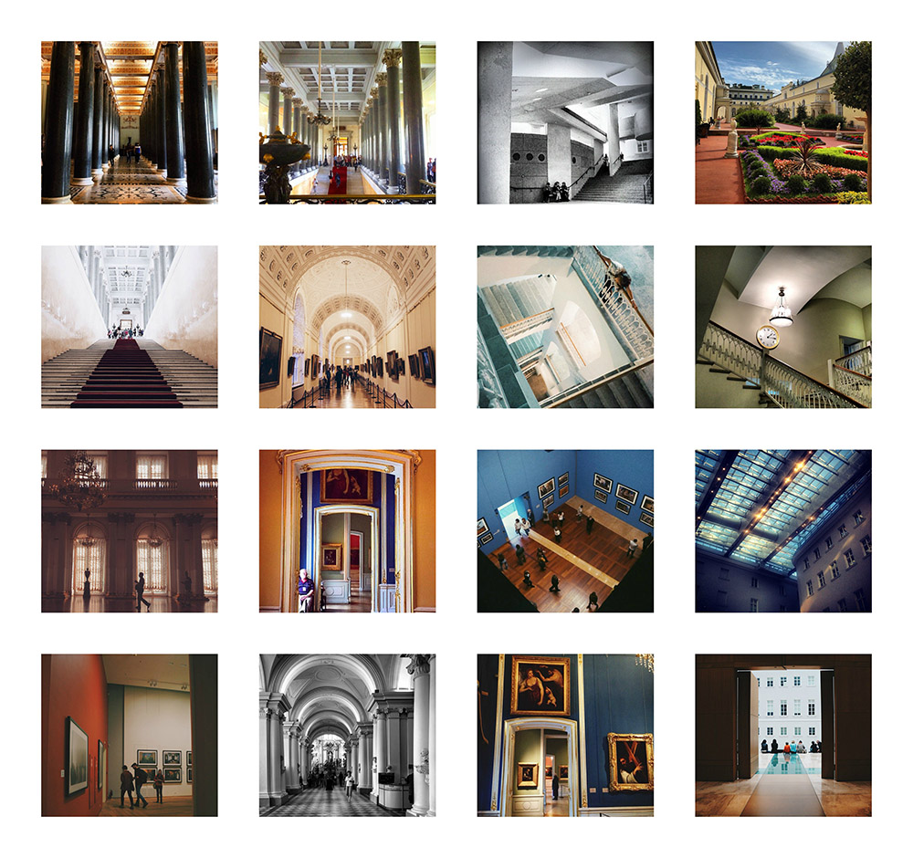
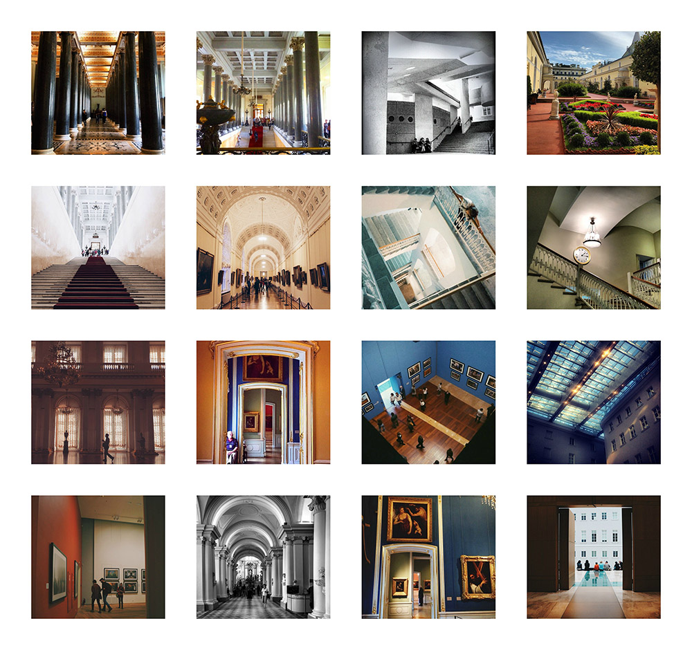
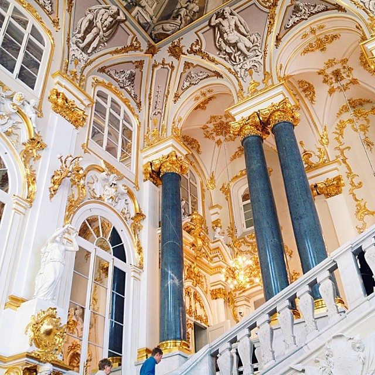
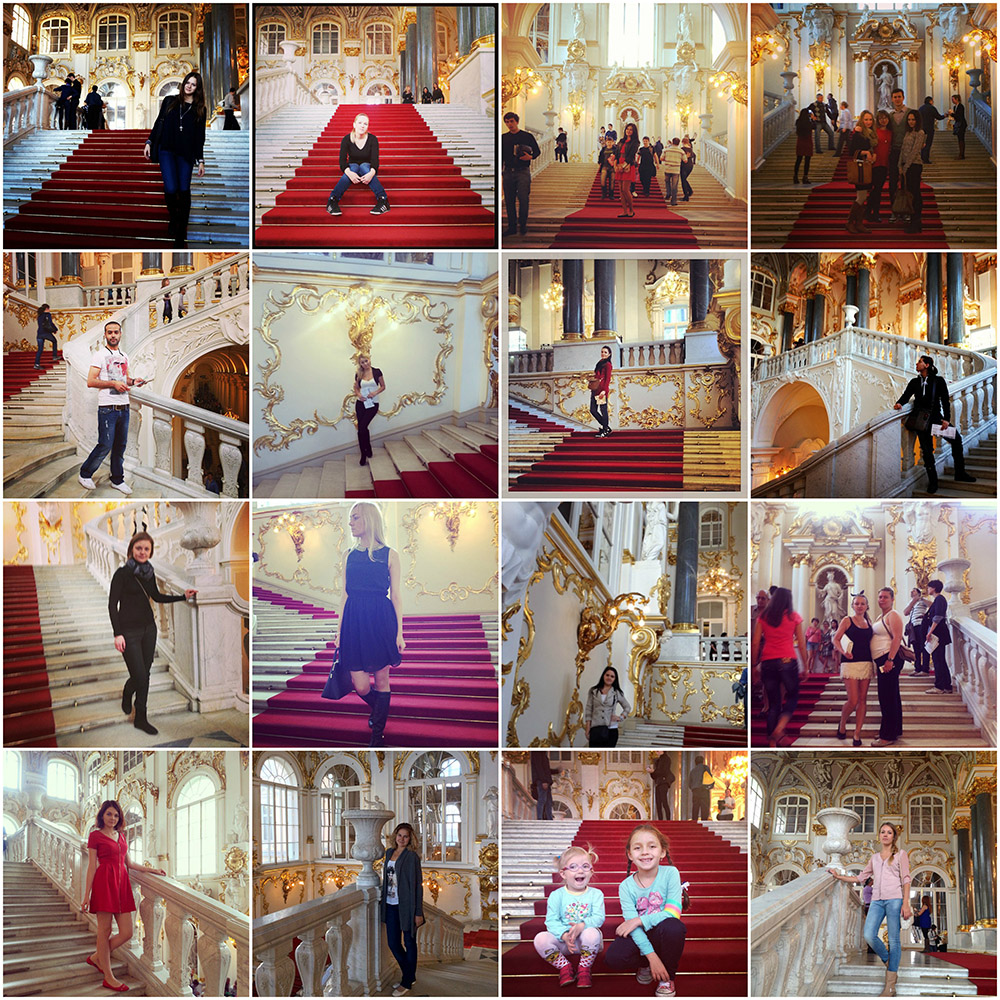
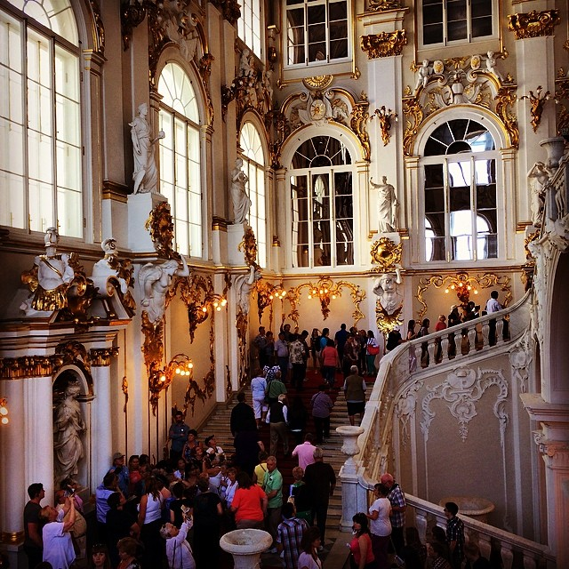
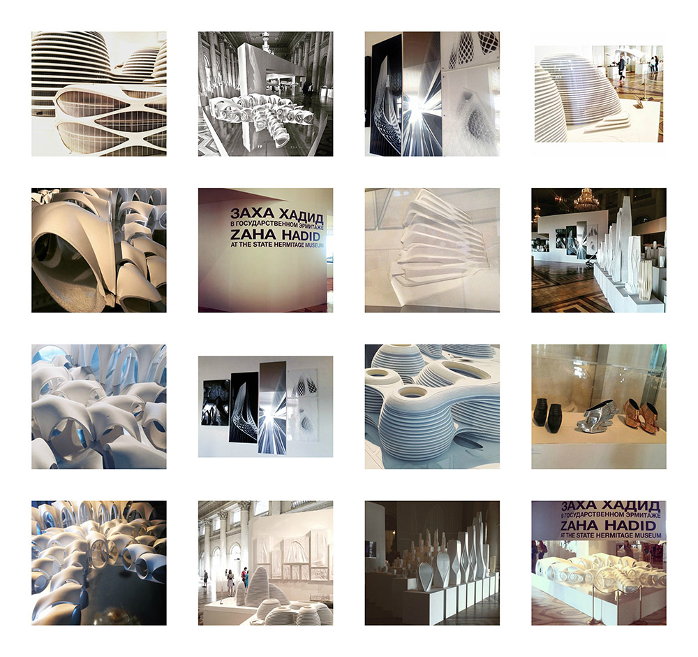
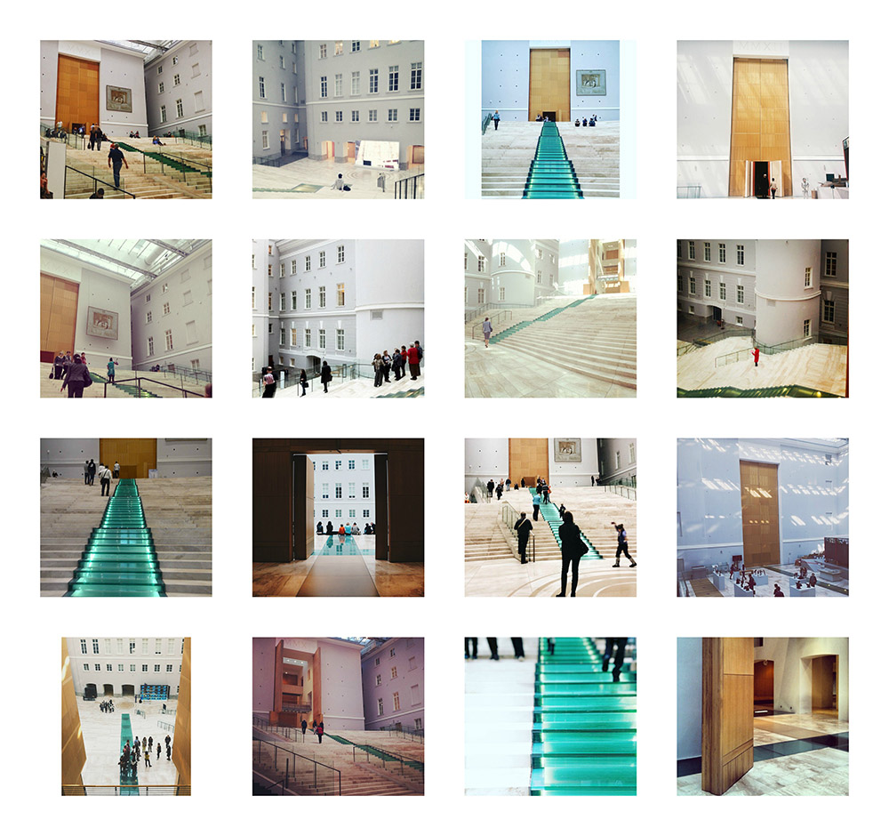

Интерьеры
Здание музея и его интерьер - важные части музейной экспозиции. Посетители проводят "визуальную инвентаризацию" Дворца, поскольку в деталях воссоздают интерьер музея в Instagram.
Самыми популярными оказались люстры (409 фото), за ними следуют изображения потолка и пола (288 фото), лестничных пролетов (57 фото) и украшений на стенах, особенно зеркал (48 фото), дверных ручек и предметов мебели.

Самые популярные «нефигуративные» объекты Эрмитажа – это холлы, коридоры и залы (548 фото). Мы можем определить наиболее популярные места в Эрмитаже и маршруты, с помощью которых посетители осваивают пространство музея.
 

Для большинства посетителей осмотр музея начинается с Иорданской лестницы. Это первый "дворцовый" интерьер, который производит сильное впечатление на посетителя. Иорданская лестница - одно из самых популярных мест для позирования и для селфи и наиболее узнаваемое место музея.



Сходство маршрутов и путей освоения музея приводит к тому, что внимание посетителей привлекают одни и те же объекты. Среди наиболее популярных мест музея мы также обнаружили Малый Тронный зал, библиотеку Николая Второго, Висячий сад Малого Эрмитажа и Лоджии Рафаэля. Посетители Эрмитажа часто фотографируют их с одного и того же ракурса, и эти залы, холлы и галереи являются наиболее стандартизированными объектами для съемки.


В нашу выборку попали и фотографии с временных выставок. Судя по количеству изображений, посетителей музея впечатлила ретроспективная выставка работ Захи Хадид в 2015г. Другие временные выставки, проводившиеся в период 2011-2016, не столь ярко представлены в Instagram-фотографиях. Вероятней всего основная аудитория музея все же нацелена на осмотр основной коллекции и посещение музея в целом.

